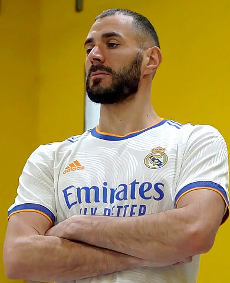
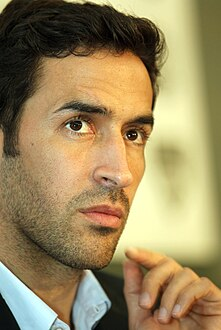

وصف الفريق
عُرِفَ باللّعب بالزّيّ الأبيض؛ لذا لُقِّبَ بـ “لوس بلانكوس”، وله العديد من الجماهير من مختلف بلاد العالم، فهو الفريق الأشهر في العالم.
بدأت نشأة الفريق من خلال فريق Football Club Sky ، حيث أنّه من الفرق التي تمّ تشكيلها في عام 1897، وتمّ تأسيس النّادي بشكل رسمي في عام 1902م.
انضمّ الفريق إلى الاتّحاد الملكي المختصّ بكرة القدم في إسبانيا، كما أنّه لعب في مجموعة متعدّدة من الملاعب، إلى أن تولّى رئاسة النادي سانتياغو برنابيو قيادة الفريق.
تمّ بناء ملعب يحمل نفس اسم النّادي، وافتّتحه البرنابيو في عام 1947، ويتّسع الملعب لأكثر من 80 ألف مشجّع.
كان الملعب موطنًا لإقامة نهائي كأس العالم للاتّحاد الدولي لكرة القدم (FIFA) عام 1982.
بدأت أوروبا في تنظيم بطولة كأس أوروبا لأوّل مرّة في عام 1955 مع واحد من الملاعب التي تتكوّن من أندية فازت ببطولة الدّوري.
حقّق فريق ريال مدريد انتصارًا عظيمًا في تلك البطولة و اقتنص لقب الفائز الأوّل.
تمكّن مجموعة متعدّدة من اللّاعبين في الفريق من الفوز بـ 5 كؤوس أوروبية على التوالي ومنهم فيرينك بوشكاش، وألفريدو دي ستيفانو، وباكو خينتو، وهيكتور ريال، ميغيل مونيوز.
لعب نادي فريق مدريد في النهائي الخاص بكأس أوروبا في عام 1960،
هدافين الفريق
عُرِفَ باللّعب بالزّيّ الأبيض؛ لذا لُقِّبَ بـ “لوس بلانكوس”، وله العديد من الجماهير من مختلف بلاد العالم، فهو الفريق الأشهر في العالم.
بدأت نشأة الفريق من خلال فريق Football Club Sky ، حيث أنّه من الفرق التي تمّ تشكيلها في عام 1897، وتمّ تأسيس النّادي بشكل رسمي في عام 1902م.
كرستيانو رونالدو
450 gool
كاريم بنزيما

327 gool
راؤل جونزاليس

323gool
landsate Earth
sensor
platform
spectrum
Mss
landsat1-5
VNIR
TM
landsat4-5
TIR
This is the first item's accordion body. It is shown by default, until the collapse plugin adds the appropriate classes that we use to style each element. These classes control the overall appearance, as well as the showing and hiding via CSS transitions. You can modify any of this with custom CSS or overriding our default variables. It's also worth noting that just about any HTML can go within the .accordion-body, though the transition does limit overflow.
This is the second item's accordion body. It is hidden by default, until the collapse plugin adds the appropriate classes that we use to style each element. These classes control the overall appearance, as well as the showing and hiding via CSS transitions. You can modify any of this with custom CSS or overriding our default variables. It's also worth noting that just about any HTML can go within the .accordion-body, though the transition does limit overflow.
This is the third item's accordion body. It is hidden by default, until the collapse plugin adds the appropriate classes that we use to style each element. These classes control the overall appearance, as well as the showing and hiding via CSS transitions. You can modify any of this with custom CSS or overriding our default variables. It's also worth noting that just about any HTML can go within the .accordion-body, though the transition does limit overflow.
كريستيانو رونالدو دوس سانتوس أفيرو (تلفظ برتغالي: /kɾiʃˈtjɐnu ʁoˈnaɫdu/؛ مواليد 5 فبراير 1985) المعروف بـ كريستيانو رونالدو. هو لاعب كرة قدم برتغالي يلعب مهاجمًا لنادي النّصر السعودي في دوري المُحترفين السعودي وهو قائد المنتخب البرتغاليّ. يعتبره الكثيرون أحد أعظم اللاعبين في تاريخ كرة القدم، حصل رونالدو على خمسة كرات ذهبية كأكثر لاعب أوروبيّ، وهو أول لاعب يفوز بأربعة أحذية ذهبيّة أوروبية. فاز بـ34 بطولة رسمية في مسيرته، من ضمنها سبعة ألقاب دوري، وخمسة ألقاب في دوري أبطال أوروبا، ولقب واحد في بطولة أمم أوروبا، ولقب البطولة الافتتاحيّة لدوري الأمم الأوروبيّة. يحمل رونالدو الأرقام القياسية لأكثر عدد من المباريات (183) والأهداف (140) والصناعة (42) في تاريخ دوريّ أبطال أوروبا، وأكثر من سجّل أهداف في كرة القدم الدولية (135)، والأكثر مشاركة دولية (217). وهو أحد اللاعبين القلائل الذين شاركوا في أكثر من 1250 مُباراة رسميّة في مسيرتهم وسجّل أكثر من 924 هدفا رسميّ مع الأنديّة والمُنتخب. كما أنّه اللاعب الوحيد الذي سجّل في خمس نُسخ لكأس العالم، والوحيد الذي شارك في ست نُسخ من كأس أمم أوروبا وسجّل في خمس نسخ منها أيضًا، وهُو أكثر من شارك في مُباريات البُطولة (30 مُباراة) والهدّاف التاريخي لها (14 هدفاً).

.jpg)